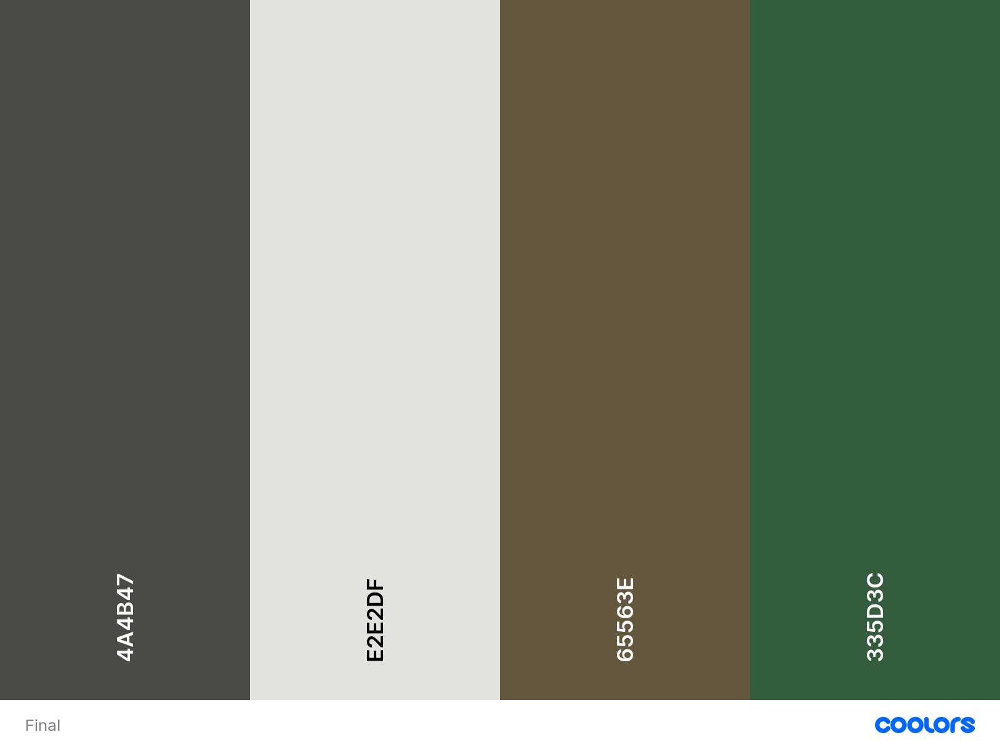

Atlas Cafe
Atlas Café Website was another university project where I created a website for a café in gungahlin. The website main focus was on design which meant I focused mainly on the CSS and HTML. There was no JavaScript in the website. The goal was to introduce design students on how to make a website so that they could make their only portfolio website.
Documentation
For this website the design process was split into two main stages, planning and research and then creating the website.Research and Planning
The first stage was conducting research on similar business that have an online presence and then critiquing them and finding design elements that I liked, which would be incorporated into my final designs for the website. The next stage was creating low fidelity wireframes that would be used to create higher quality ones down the line. Also, to gain an understanding of if I liked how the pages would be setup and to find things that needed to be altered down the line.Low fidelity wireframes

Contact

About

Menu

Shop

News

Item Page

Home
The next stage was deciding on the colour palette for the website. For this process I looked at their Instagram and their physical store and created a palette that best matched the aesthetic. The colour palette went through a couple of iterations before the final one was chosen.
Colour Palette

Iteration 1

Iteration 2

Iteration 3

Iteration 4

Final
High fidelity wireframes
Desktop

Contact

About

Menu

Shop

News

News Item

Item Page

Home
Website Creation
For the website creation there was no real documentation as most of it was just code development and making sure the website matched the final wireframes and Wireflows. All the code development was done inside an IDE and iterations were made on it.The website is embedded in this project, as I want to host because Atlas Café doesn't know i made a website for them
Link